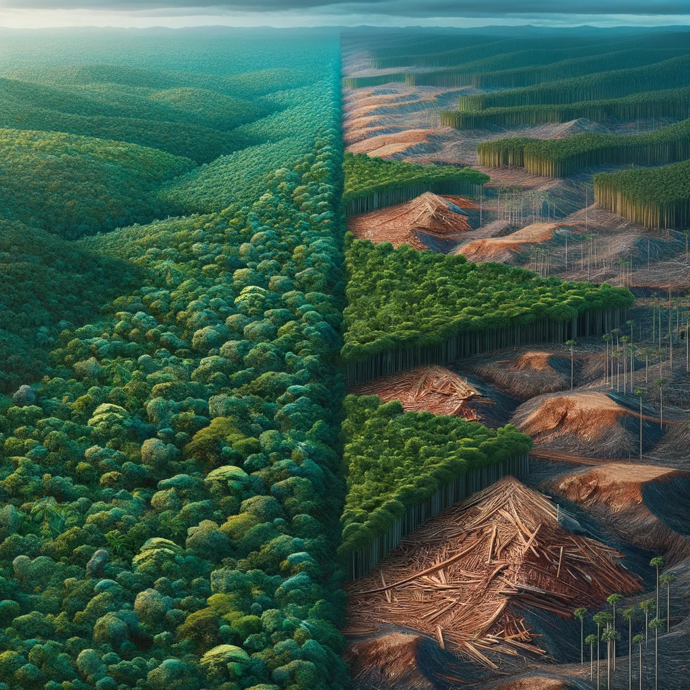
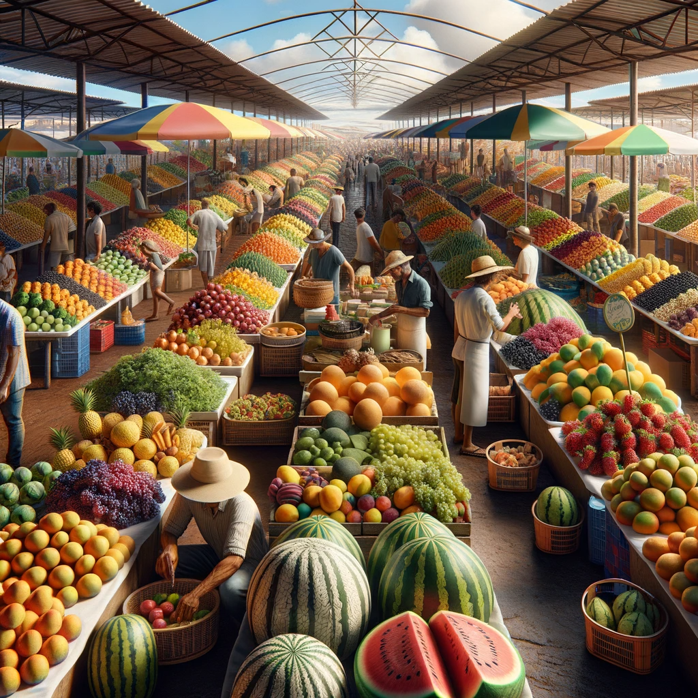
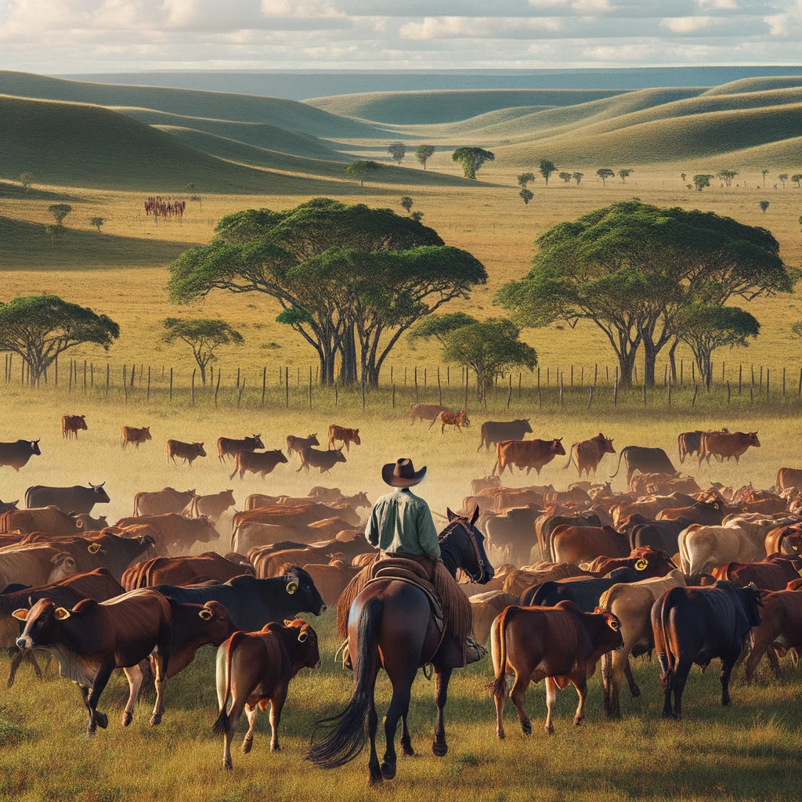
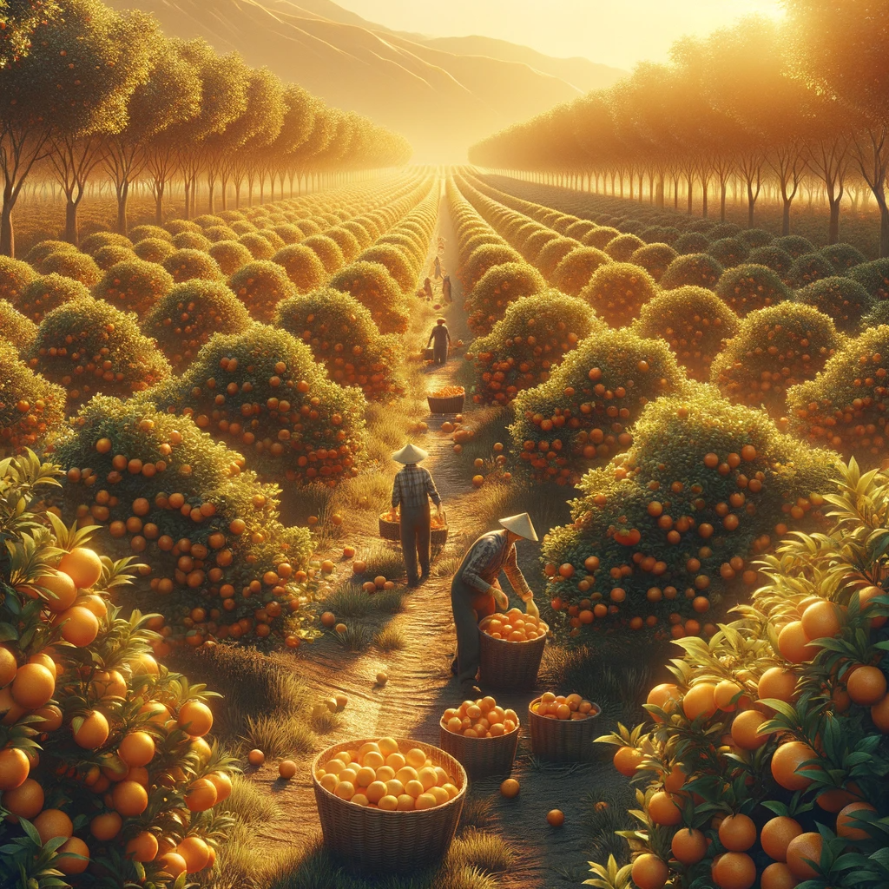
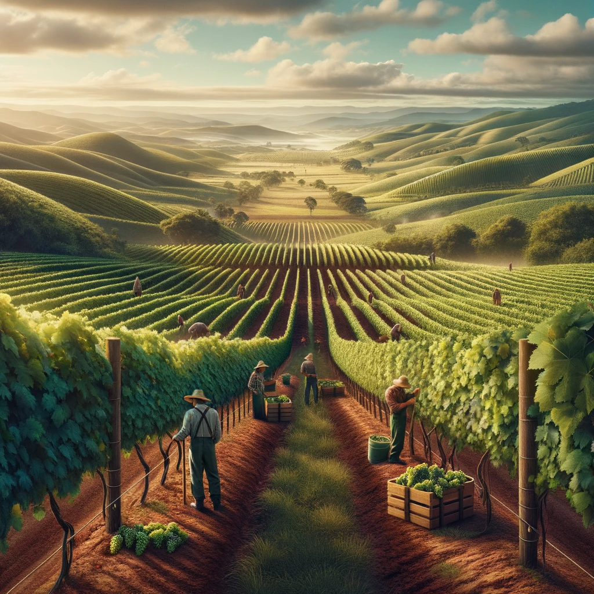

Na região Norte, que contempla os estados do Amazonas, Pará, Acre, Roraima, Rondônia, Amapá e Tocantins, destacam-se: pressão pela expansão das atividades agrárias no “MATOPIBA” (Maranhão, Tocantins, Piauí e Bahia); atividades agrícolas com ênfase na pecuária primitiva; atividades de extrativismo vegetal não madeireiro, como seringa, nozes e retirada de frutos de árvores nativas (castanha-do-pará e açaí, por exemplo); pecuária predominantemente extensiva, com criação de gado bovino em áreas de pastagens naturais; casos de conflitos entre preservação ambiental, áreas de proteção, áreas de cultivos e atividades de extração madeireira.
Na região Nordeste, que contempla os estados da Bahia, Alagoas, Ceará, Maranhão, Paraíba, Pernambuco, Piauí, Rio Grande do Norte e Sergipe, destacam-se: plantations presentes desde os tempos coloniais; predomínio do plantio de cana-de-açúcar voltada para produção de álcool e açúcar; presença da agricultura familiar e produção mecanizada na região do semiárido; frutas entre os principais cultivos, com destaque para melão, uva, manga e abacaxi. agricultura de subsistência.
Na região Centro-Oeste, que contempla os estados do Mato Grosso, Mato Grosso do Sul, Goiás e a capital federativa, destacam-se: aumento constante do cultivo a partir da produção mecanizada; expansão em direção à Amazônia; a criação de gado bovino para corte é expressiva; uma das principais produtoras de grãos do país, com destaque para a soja.
Na região Sudeste, que contempla os estados de São Paulo, Rio de Janeiro, Espírito Santo e Minas Gerais, destacam-se: predomínio de mecanização e produção com base em procedimentos intensivos de alta tecnologia; agricultura subordinada à indústria; altos índices de produtividade e uso do solo; maior presença de maquinários; geração de empregos é limitada ou acontece pelas agroindústrias; cultivo de café, cana-de-açúcar, laranjas e outras frutas.
Na região Sul, que contempla os estados do Rio Grande do Sul, Santa Catarina e Paraná, destacam-se: expansão da soja voltada para a exportação; intensiva modernização agrícola; A agricultura dessa região é a que se encontra mais subordinada à indústria. Devido à maior presença de máquinas, sendo também a região onde a geração de empregos é limitada. produção agrícola predominantemente no oeste do Paraná, oeste de Santa Catarina e norte do Rio Grande do Sul; cultiva-se soja, milho, cana-de-açúcar e algodão em larga escala; na pecuária, a criação de porcos e aves é predominante.
